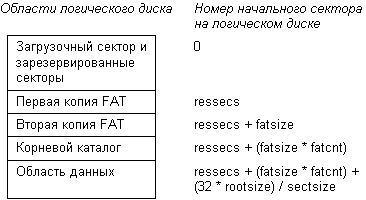
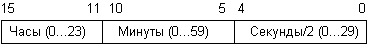
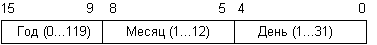

Вы, конечно, знаете, что файловая система MS-DOS имеет древовидную структуру. В корневом каталоге располагаются 32-байтовые элементы, которые содержат информацию о файлах и других каталогах. Для чтения корневого каталога необходимо определить его расположение и размер.
Корневой каталог находится сразу за последней копией FAT . Количество секторов, занимаемых одной копией FAT, находится в блоке параметров BIOS в загрузочном секторе (поле fatsize), а количество копий FAT - в поле fatcnt блока BPB . Следовательно, перед корневым каталогом находится один загрузочный сектор и fatcnt * fatsize секторов таблицы размещения файлов FAT.
Размер корневого каталога можно определить исходя из значения поля rootsize. При форматировании диска в это поле записывается максимальное количество файлов и каталогов, которые могут находиться в корневом каталоге. Для каждого элемента в каталоге отводится 32 байта, поэтому корневой каталог имеет длину 32 * rootsize байт.
Корневой каталог занимает непрерывную область фиксированного размера. Размер корневого каталога задается при форматировании и определяет максимальное количество файлов и каталогов, которые могут быть в нем описаны.
Для определения количества секторов, занимаемых корневым каталогом, можно воспользоваться следующей формулой:
RootSecs = sectsize / (32 * rootsize)
В этой формуле sectsize - размер сектора в байтах, он может быть получен из соответствующего поля загрузочного сектора.
На рис. 2.3 изображены все области логического диска. Такую структуру имеют логические диски , расположенные в разделах жестких дисков, а также дискеты.

Рис. 2.3. Структура логического диска MS-DOS
Вслед за корневым каталогом на логическом диске находится область файлов и подкаталогов корневого каталога .
Область данных разбита на кластеры, причем нумерация кластеров начинается с числа 2. Кластеру с номером 2 соответствуют первые секторы области данных.
Теперь мы можем привести формулу, которая позволит нам связать номер кластера с номерами секторов, занимаемых им на логическом диске:
SectNu = DataStart + ((ClustNu - 2) * clustsize)
В этой формуле использованы следующие
обозначения:
| SectNu | номер первого сектора, распределенного кластеру с номером ClustNu; |
| DataStart | начало области данных, вычисляется по
формуле: ressecs + (fatsize * fatcnt) + (32 * rootsize/ sectsize); |
| ClustNu | номер кластера, для которого необходимо определить номер первого сектора; |
| clustsize | количество секторов, занимаемых кластером; находится в блоке параметров BIOS. |
Как мы уже говорили, любой каталог содержит
32-байтовые элементы - дескрипторы, описывающие
файлы и другие каталоги. Приведем формат
дескриптора:
| Смещение | Размер | Содержимое |
| 0 | 8 | Имя файла или каталога, выровненное на левую границу и дополненное пробелами |
| 8 | 3 | Расширение имени файла, выровненное на левую границу и дополненное пробелами |
| 11 | 1 | Байт атрибутов файла |
| 12 | 10 | Зарезервировано |
| 22 | 2 | Время создания файла или время его последней модификации |
| 24 | 2 | Дата создания файла или дата его последней модификации |
| 26 | 2 | Номер первого кластера, распределенного файлу |
| 28 | 4 | Размер файла в байтах |
В любом каталоге, кроме корневого, два первых дескриптора имеют специальное назначение. Первый дескриптор содержит в поле имени строку:
". "
Этот дескриптор указывает на содержащий его каталог. То есть каталог имеет ссылку сам на себя.
Второй специальный дескриптор содержит в поле имени строку:
".. "
Этот дескриптор указывает на каталог более высокого уровня.
Если в поле номера первого занимаемого кластера для дескриптора с именем ".. " находится нулевое значение, это означает, что данный каталог содержится в корневом каталоге.
Таким образом, в древовидной структуре каталогов имеются ссылки как в прямом, так и в обратном направлении. Эти ссылки можно использовать для проверки сохранности структуры каталогов файловой системы.
Байт атрибутов является принадлежностью
каждого файла. Биты этого байта имеют следующие
значения:
| Бит | Описание |
| 0 | Файл предназначен только для чтения.В этот файл нельзя писать и его нельзя стирать |
| 1 | Скрытый файл.Этот файл не будет появляться в списке файлов, создаваемом командой DIR |
| 2 | Системный файл. Этот бит обычно установлен в файлах, являющихся составной частью операционной системы |
| 3 | Данный дескриптор описывает метку диска.Для этого дескриптора поле имени файла и поле расширения имени файла должны рассматриваться как одно поле длиной 11 байт. Это поле содержит метку диска |
| 4 | Дескриптор описывает файл, являющийся подкаталогом данного каталога |
| 5 | Флаг архивации.Если этот бит установлен в 1, то данный файл не был выгружен утилитой архивации |
| 6-7 | Зарезервированы |
Обычно файлы имеют следующие атрибуты:
| Атрибут | Описание |
| 0 | Обычные файлы (тексты программ, загрузочные модули, пакетные файлы) |
| 7 | Только читаемые, скрытые, системные файлы. Такая комбинация битов байта атрибутов используется для файлов операционной системы io.sys , msdos.sys |
| 8 | Метка тома. Дескриптор метки тома может находиться только в корневом каталоге логического диска |
| 10h | Дескриптор, описывающий каталог |
| 20h | Обычный файл, который не был выгружен программами backup.exe или xcopy.exe |
При удалении файла первый байт его имени заменяется на байт E5h (символ "х"). Все кластеры, распределенные файлу, отмечаются в FAT как свободные. Если вы только что удалили файл, его еще можно восстановить, так как в дескрипторе сохранились все поля, кроме первого байта имени файла. Но если на диск записать новые файлы, то содержимое кластеров удаленного файла будет изменено и восстановление станет невозможным.
Остановимся подробнее на полях времени и даты создания или последней модификации файла. MS-DOS обновляет содержимое этих полей после любой операции, изменяющей содержимое файла - создания файла, перезаписи содержимого файла, добавления данных в файл или обновления содержимого файла. После обновления файла MS-DOS устанавливает бит архивации 5 байта атрибутов в 1.
Формат поля времени показан на рис. 2.4.

Рис. 2.4. Формат поля времени
Старшие пять бит содержат значение часа модификации файла, шесть бит с номерами 5 - 10 содержат значение минут модификации файла, и, наконец, в младших 5 битах хранится значение секунд, деленное на 2. Для того, чтобы время обновления файла уместилось в шестнадцати битах, пришлось пойти на снижение точности времени до двух секунд.
Формат даты обновления файла напоминает формат времени (рис. 2.5).

Рис. 2.5. Формат поля даты
Для того чтобы получить значение года обновления файла, необходимо прибавить к величине, хранимой в старших семи битах, значение 1980. Поля месяца и дня каких-либо особенностей не имеют, они полностью соответствуют календарной дате.
Поле длины в дескрипторе содержит точную длину файла в байтах. Для каталогов в поле длины записано нулевое значение. Вы не можете работать с каталогом средствами MS-DOS, как с обычным файлом. Единственный способ прочитать каталог как файл - использование таблицы FAT для определения цепочки занимаемых каталогом кластеров и чтение секторов, соответствующих этим кластерам при помощи прерывания INT 25h .